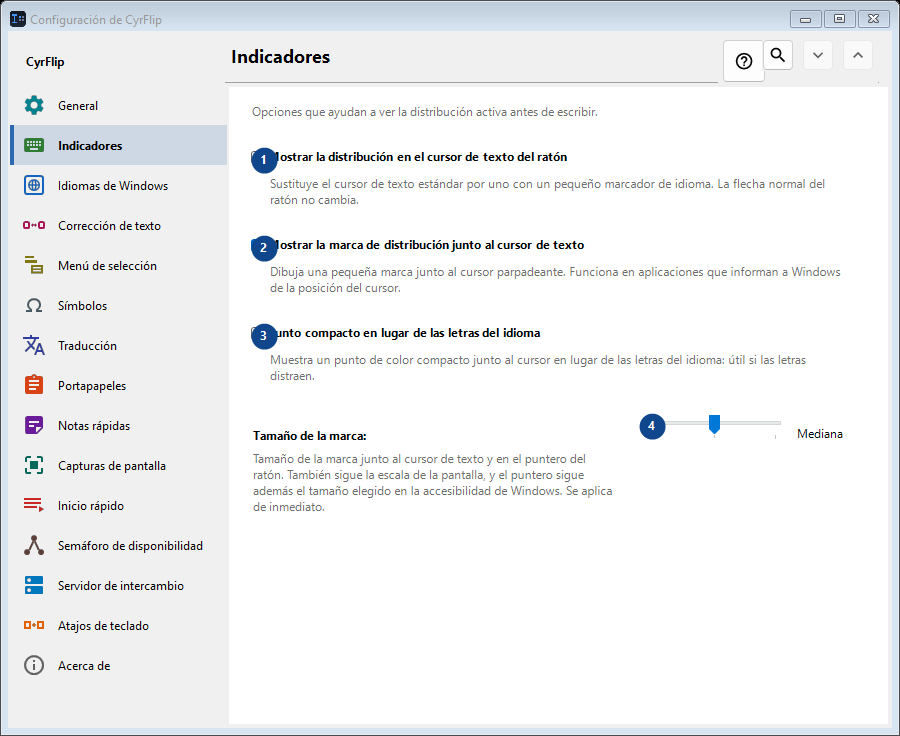
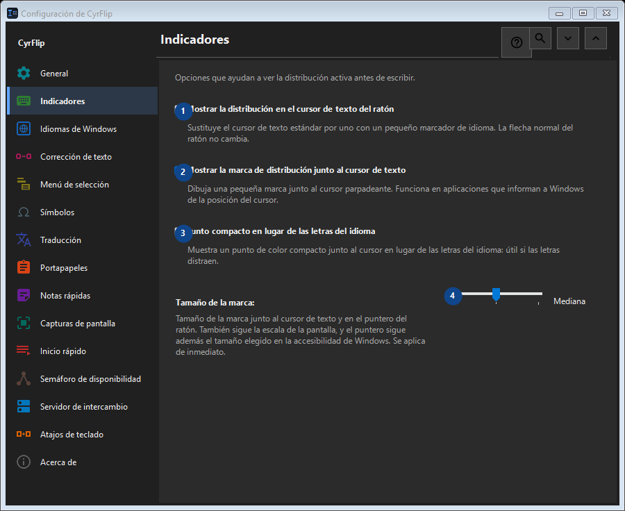

Indicadores
Para qué sirve
Opciones que ayudan a ver la distribución activa antes de escribir.


Orden de uso
Los ajustes se aplican de inmediato. No hay un orden obligatorio; usa los grupos siguientes.
Elementos
1. Mostrar la distribución en el cursor de texto del ratón
Sustituye el cursor de texto estándar por uno con un pequeño marcador de idioma. La flecha normal del ratón no cambia.
Tus atajos2. Mostrar la marca de distribución junto al cursor de texto
Dibuja una pequeña marca junto al cursor parpadeante. Funciona en aplicaciones que informan a Windows de la posición del cursor.
Tus atajos3. Punto compacto en lugar de las letras del idioma
Muestra un punto de color compacto junto al cursor en lugar de las letras del idioma: útil si las letras distraen.
Tus atajos4. Tamaño de la marca
Elige o introduce el valor de la etiqueta contigua. Revísalo antes de continuar.
Tus atajos